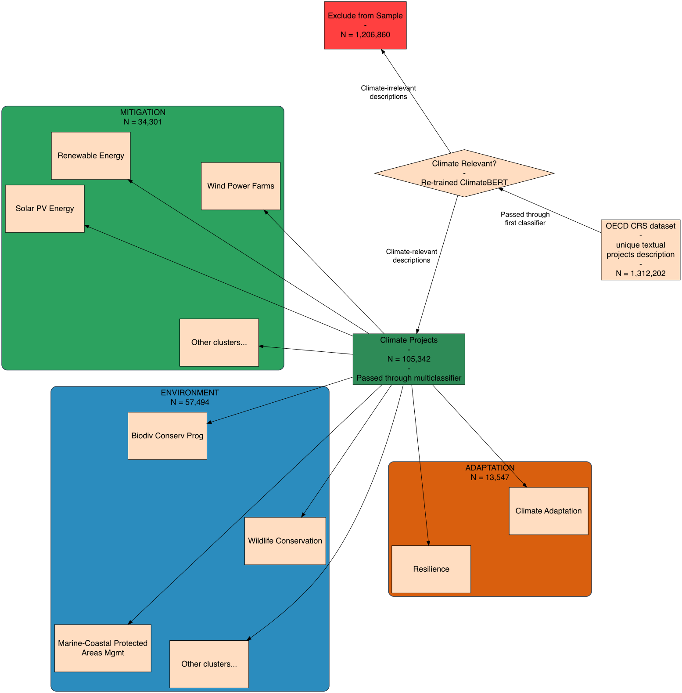
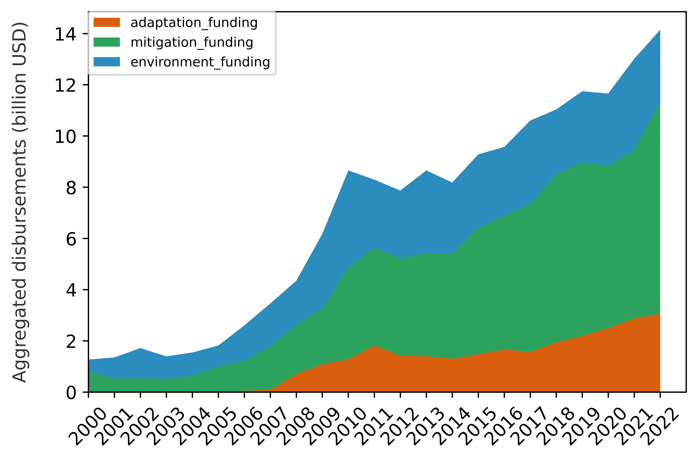
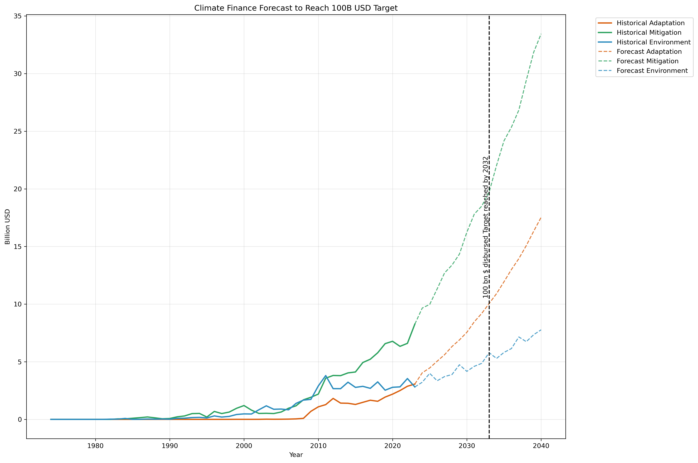
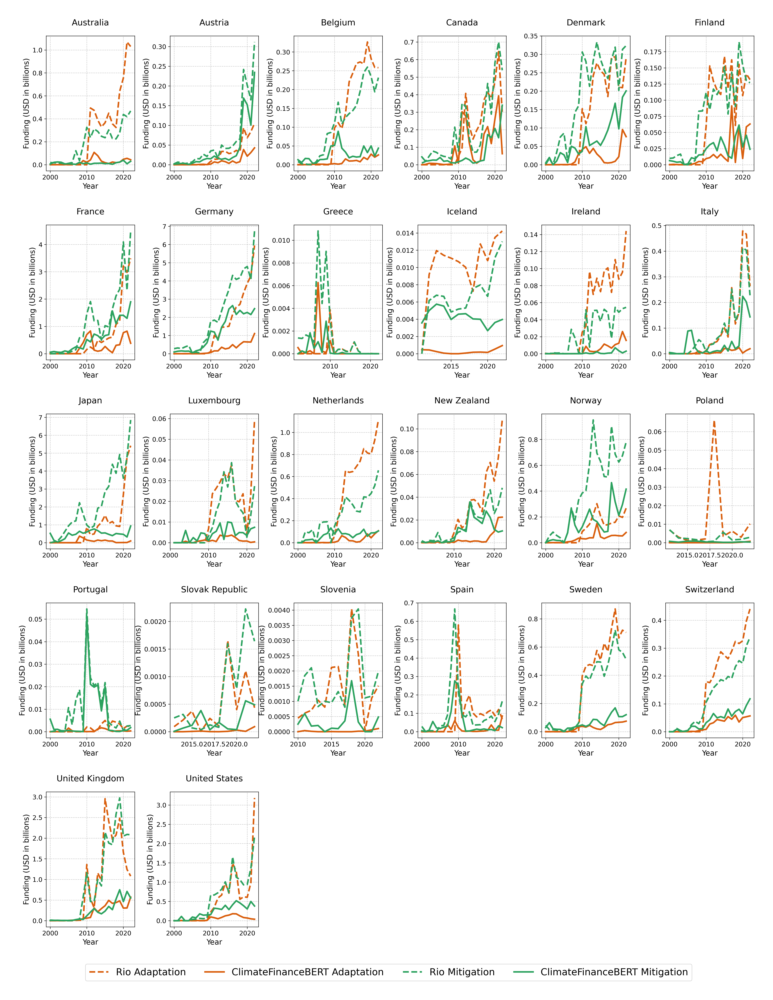
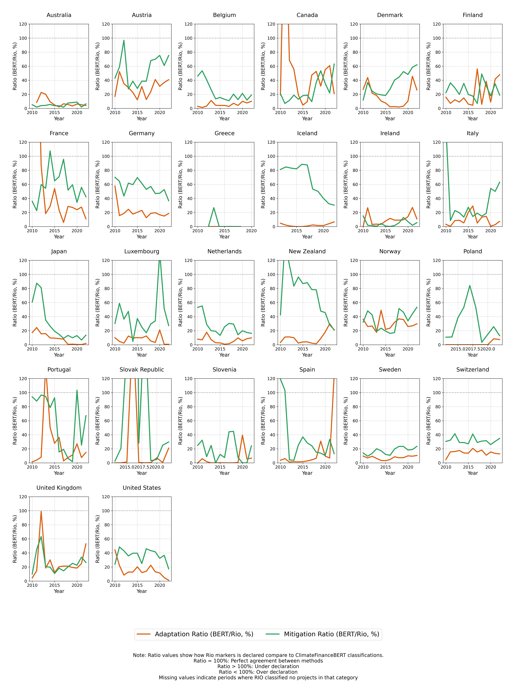

The escalating threat of climate change demands robust financial strategies. Traditional classification methods, such as the OECD’s Rio markers, have limitations that obscure the nuanced allocation of climate finance. This work introduces an AI-driven approach that leverages ClimateFinanceBERT to provide a more detailed and accurate estimation of bilateral public climate finance. By revisiting the determinants of climate finance allocation, we challenge longstanding assumptions and propose a framework that better aligns with contemporary climate challenges.
Abstract
Climate finance is critical for addressing the multifaceted challenges of climate change. This study employs ClimateFinanceBERT, a machine learning framework built on advanced NLP techniques, to re‐examine bilateral public climate finance flows. By classifying project descriptions from the OECD CRS dataset, our analysis refines estimates of both mitigation and adaptation finance, revealing that traditional methods may overestimate flows. The resulting insights offer an improved analytical framework for policymakers, emphasizing transparency and impact in climate finance allocation.
Introduction
Methods
Data and Classification
Utilizing the OECD CRS dataset (1973–2022), the study examines over 5 million project descriptions. A two-stage classification using ClimateFinanceBERT first filters climate-relevant projects and then categorizes them into mitigation, adaptation, and environmental finance. This approach incorporates modern NLP techniques and cluster analysis to overcome the biases inherent in self-reported data.
Econometric Framework
A double hurdle model is employed to separately analyze the decision to allocate aid (selection) and the amount disbursed (allocation). The model incorporates geopolitical, institutional, and vulnerability indicators, allowing for a nuanced understanding of both adaptation and mitigation finance determinants.

Results
The refined classification uncovers significant discrepancies between traditional CRS estimates and those produced by ClimateFinanceBERT. Key findings include lower estimates of mitigation and adaptation flows, suggesting that traditional methods may suffer from overreporting biases. The interactive visualizations below illustrate these differences, highlighting country vulnerabilities and the reclassified disbursement patterns. Below you can see a projection on reclassified climate finance evolution until when we will "really" reach the 100 billions for climate. You can also see the difference and ratio between self declared climate financial flows and AI declared ones by countries, giving an idea of countries behavior.

Country Vulnerability Map

Reclassified Disbursements

Mitigation Finance Comparison

Adaptation Finance Comparison
Econometric Analysis & Discussion
Using a double hurdle model, our analysis distinguishes between the selection and allocation stages of climate finance. For mitigation finance, a strong positive correlation suggests standardized decision-making, whereas adaptation finance displays a more complex, need-driven pattern. Tables and figures (not fully displayed here) quantify these effects, challenging traditional views on the role of historical ties and governance in climate aid distribution.

Forecast Trend (SARIMA)

Donor Comparison: Study vs. Traditional

Over-Declaration Ratio by Donor
Policy Implications
The findings of this study have profound implications for international climate finance. With evidence of overreporting in traditional estimates, a shift toward transparency and impact-driven allocation is needed. Adaptation finance should be more focused on recipient vulnerability and institutional capacity, while mitigation finance remains partly influenced by historical ties. Tailored policy frameworks must recognize these differences to optimize financial flows and enhance the effectiveness of climate aid.
BibTeX
@unpublished{beaucoral2025,
title={Under the Green Canopy: Bringing Up to Date Public Climate Finance Determinants Analysis with AI},
author={Beaucoral, Pierre},
year={2025},
note={Preliminary version. Supported by the Agence Nationale de la Recherche.},
url={https://arxiv.org/abs/}
}